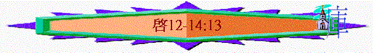

|
主 必 快 來 |
|||||
|
序 幕 |
開 始 |
中 段 |
尾 聲 |
結 局 |
結 語 |
|
簡介與意義 |
展開與前奏 |
警告與剛硬 |
刑罰與反抗 |
過去與更新 |
囑咐與回應 |
|
1-3 |
4-7 |
8-11 |
12-20 |
21:1-22:5 |
22:6-21 |
四.尾聲 -->刑罰與反抗(12-20)
〜七印，七號已展開，之前的警告已出，但世人仍不悔改，神只好在七碗中傾盡祂的憤怒。
〜七碗的災難明顯比七印、七號更嚴厲，更不留餘地，因神要刑罰人，發盡祂的大怒，但可惜人在神的震怒中，仍剛硬，仍嘗試抵抗，但至終失敗，主帶著千軍返來，擊殺仇敵。
〜七碗也是世界到盡頭的尾聲。
1.刑罰的對象(12-14:5)
〜未傾倒刑罰前，神先啟示約翰知道神將要刑罰的對象，審判的群眾，有魔鬼(大紅龍)，有敵基督(獸)，有假先知(兩角的獸)，更有跟隨者(受666印記的人)。
A.魔鬼(大紅龍)(12)
〜以下提及魔鬼從起初到將來，不斷的攻擊、敵擋屬神的事、屬神的人，但牠至終卻是失敗的！
a.魔鬼與基督的爭戰
(1)婦人的生產
「天上現出大異象來：有一個婦人身披日頭，腳踏月亮，頭戴十二星的冠冕。
他懷了孕，在生產的艱難中疼痛呼叫。」12:1-2
〜「身披日頭，腳踏月亮，頭戴十二星的冠冕」在創37:9，雅各(以色列)的兒子約瑟曾發夢，夢見太陽，月亮與十一個星向他下拜，日、月、星代表高高在上
，有高位份旳人。
〜此婦人應是指以色列人，從他們而出會有一嬰孩，為人捨身卻升天。
〜而以色列十二支是神所揀選的，超越眾邦，將來萬民也要來到以色列，朝見以色列的主。
〜所以她是有權柄(冠冕)
(2)紅龍的攻擊
「大龍就是那古蛇，名叫魔鬼，又叫撒但，是迷惑普天下的。他被摔在地上，他的使者也一同被摔下去。」12:9
〜「大紅龍」就是魔鬼，牠的權柄，勢力是大的，與龍的兇殘，「紅」可代表血，牠出現，令很多流血的事發生。
〜「七頭十角」啟17:9
頭可以代表王，或國，魔鬼在世界掌權，擁有牠的國度，在過往埃及、亞述、巴比倫、瑪代波斯、希臘、羅馬，七大古國有牠的權柄(都與以色列有關)，十角，可以指將來世界的十個王(啟17:12)七，及十代表完整，可能指整體國度，王權都似乎是撒但掌權。
〜「尾巴拖拉著天上星辰的三分之一」在啟示錄中尾巴通常指傷人，害人的工具，而「星辰的三分之一」應指墜落的天使(伯38:7)；魔鬼連同墜落的天使被驅逐於天上，摔在地上。
〜「吞吃他的孩子」魔鬼在地上要攻擊以色列的後裔--耶穌
(3)基督的被提
「婦人生了一個男孩子，是將來要用鐵杖轄管（轄管：原文作牧）萬國的；他的孩子被提到神寶座那裡去了。婦人就逃到曠野，在那裡有神給他預備的地方，使他被養活一千二百六十天。」12:5-6
〜那孩子是會轄管萬國(啟2:27)，祂就是基督，被提到神那�堙C
〜所以撒但想攻擊基督，至終是失敗的。
b.魔鬼與天使的爭戰
「在天上就有了爭戰。米迦勒同他的使者與龍爭戰，龍也同他的使者去爭戰，並沒有得勝，天上再沒有他們的地方。大龍就是那古蛇，名叫魔鬼，又叫撒但，是迷惑普天下的。他被摔在地上，他的使者也一同被摔下去。」12:7-9
〜「米迦勒」(但10:13,12;1,猶9)，他是天使長，也是保護以色列的天使，曾在天上與龍和牠的使者爭戰，結果龍失敗了。
〜「大紅龍」就是那古蛇，創世記中曾出現古蛇，牠引誘人犯罪，啟示錄也說祂是撒但，撒但的意思是抵擋者，牠一直抵擋神的工作，也是迷惑普天下，但在天上，牠失敗了，被摔下去。
c.魔鬼與聖徒爭戰
「我聽見在天上有大聲音說：「我神的救恩、能力、國度、並他基督的權柄，現在都來到了！因為那在我們神面前晝夜控告我們弟兄的，已經被摔下去了。弟兄勝過他，是因羔羊的血和自己所見證的道。他們雖至於死，也不愛惜性命。所以，諸天和住在其中的，你們都快樂吧！只是地與海有禍了！因為魔鬼知道自己的時候不多，就氣忿忿的下到你們那裡去了。」」12:10-12
〜自古以來，魔鬼都用諸般方法想聖徒跌倒，例如叫我們過份自責，控告我們，用肉身痛苦攻擊我們。
〜但至終「弟兄勝過牠」，因為：
(1)羔羊的血
〜主的血使我們罪得赦，沒人沒物可控告我們，主的血使我們每天更新，忘記背後，努力面前。
(2)見證的道
〜道就是聖經，神的話，我們用生命，用言語見証的道，如寶劍使我們得勝，神的話也可以使我們成聖。
(3)至死忠心
〜得勝的教會，就是至死忠心的教會，即使魔鬼用死亡威嚇我們，但我們愛主勝過愛生命，至死仍忠心，受苦的心志，使我們得勝。
〜魔鬼對聖徒也失敗，但牠知道自己的時候不多(主再回來，要審判牠了)牠將手頭(在末世)指向以色列人
d.魔鬼與選民的爭戰
(1)選民受逼迫
「龍見自己被摔在地上，就逼迫那生男孩子的婦人。」12:13
(2)神卻要保護
「於是有大鷹的兩個翅膀賜給婦人，叫他能飛到曠野，到自己的地方，躲避那蛇；他在那裡被養活一載二載半載。蛇就在婦人身後，從口中吐出水來，像河一樣，要將婦人沖去。地卻幫助婦人，開口吞了從龍口吐出來的水（原文作河）」12:14-16
「我向埃及人所行的事，你們都看見了，且看見我如鷹將你們背在翅膀上，帶來歸我。」出19:4
〜神卻保護以色列人(十四萬四千人)，如舊約出埃及記，如鷹保護他們一樣。
〜「從口中吐出水來像河」形容撒但如水般沖擊選民，但「地卻幫助婦人，開口吞了….」這可能象徵神的保護，如出埃記時代，當紅海淹沒埃及軍後，選民高唱「….地便吞滅他們」,神要保護他們「一載二載半」即3年半
〜撒但對受印記選民的攻擊，也失敗了。
e.撒但對餘民的爭戰
「龍向婦人發怒，去與他其餘的兒女爭戰，這兒女就是那守神誡命、為耶穌作見證的。那時龍就站在海邊的沙上。」12:17
〜「其餘的兒女」可能指在大災難期間，有一批不是以色列人，但信了主仍在世的人，他們是守神誡命，但卻要遭魔鬼攻擊。
B.敵基督(獸)(13:1-10)
〜接下來，交待另一個仇敵è就是撒但將權柄交給的敵基督，他是聖經形容的獸，末後在世上作王敵擋神，褻瀆神的那位，關乎敵基督的細節è可看
a.獸的源頭
(1)從世界來的
「我又看見一個獸從海中上來，有十角七頭，在十角上戴著十個冠冕，七頭上有褻瀆的名號。」13:1
「在他額上有名寫著說：「奧秘哉！大巴比倫，作世上的淫婦和一切可憎之物的母。」」17:15
〜從「海中上來」，如根據17:15解釋，海可能亦指眾水，也指向多民多人多國多方(事實上海亦比地的面積更多)，所以也可指世界。
〜敵基督可能是從世界而來的，他也是在世人中，和世人生活。
(2)卻代表魔鬼
〜他的形狀和龍相似，也有十角七頭，亦有龍的邪惡，龍也將權柄給了他。
〜所以他也是魔鬼的代表，混在世人中。
b.獸的權勢
(1)有歷代帝王的權勢
「我所看見的獸，形狀像豹，腳像熊的腳，口像獅子的口。那龍將自己的能力、座位、和大權柄都給了他。」13:2
〜獸有七頭，前文題及頭可代表帝國或王，牠擁有歷世歷代經典大帝國的權勢。
〜但以理書7章曾形容希臘如豹那麼快，瑪代如熊那麼強大有力，巴比倫如獅子那麼威榮，將來敵基督擁有歷代帝王的特色及權柄。
(2)有將來世界的擁護
「又任憑他與聖徒爭戰，並且得勝；也把權柄賜給他，制伏各族、各民、各方、各國。」13:7
〜有十角，如根據啟17，有十角指末後的十王，他們會聯合一齊，將權柄給了他，他亦是第七個國度的王，可能是源自羅馬，羅馬解體後，成為今日的歐洲，會否他是源自歐洲帝國，而歐洲聯合一同成為聯盟，擁護他，亦是未知知素。
c.獸的異能
(1)有魔鬼的權能
(2)有復活的經歷
「我看見獸的七頭中，有一個似乎受了死傷，那死傷卻醫好了。全地的人都希奇跟從那獸。」13:3
〜「獸的七頭中」與下文「那獸」應指同一人，他似乎受了死傷，(權仿基督死而復活)卻醫好了，全地的人，都跟從他。
d.獸的妄行
(a)褻瀆真神
「又賜給他說誇大褻瀆話的口，又有權柄賜給他，可以任意而行四十二個月。獸就開口向神說褻瀆的話，褻瀆神的名並他的帳幕，以及那些住在天上的。」13:5-6
(b)逼迫聖徒
「又任憑他與聖徒爭戰，並且得勝；也把權柄賜給他，制伏各族、各民、各方、各國。」13:7
〜聖徒此時要忍耐及有信心，因受到逼迫，被擄掠，及殺害。
C.假先知(兩角的獸)(13:11-15)
「我又看見另有一個獸從地中上來有兩角如同羊羔，說話好像龍。他在頭一個獸面前，施行頭一個獸所有的權柄，並且叫地和住在地上的人拜那死傷醫好的頭一個獸。又行大奇事，甚至在人面前，叫火從天降在地上。他因賜給他權柄在獸面前能行奇事，就迷惑住在地上的人，說：「要給那受刀傷還活著的獸作個像。」」13:11-14
「那獸被擒拿；那在獸面前曾行奇事、迷惑受獸印記和拜獸像之人的假先知，也與獸同被擒拿。他們兩個就活活的被扔在燒著硫磺的火湖裡；」19:20
「因為假基督、假先知將要起來，顯大神蹟、大奇事，倘若能行，連選民也就迷惑了。」太24:24
〜第三個仇敵，就是兩角的獸，如按19:20此迷惑人拜假基督的獸應是那假先知！協助敵基督行可憎之事。
〜三位一體的神有父神、基督、聖靈，而魔鬼也似乎刻意效法，有撒但、敵基督、假先知，與神作對。
a.他的特性
(1)從地中出來
〜敵基督是從海中，各國多民出來，假先知從地，明顯地比海小，可能不是指多國多民，不是指一聯盟出來，而是指較小，某一地方出來(有解經家指是聖地)。
(2)似基督實則屬撒但
〜「兩角如同羊羔」他的表現可能欺騙世人，世人認為他是純良的羔羊，甚致似主，但說話像「龍」，實則所講的道理是魔鬼的道理，是褻瀆的話。
(3)擁有敵基督的權柄
b.他的工作
(1)用奇事迷惑普天下
(2)引萬民敬拜假基督
「他因賜給他權柄在獸面前能行奇事，就迷惑住在地上的人，說：「要給那受刀傷還活著的獸作個像。」又有權柄賜給他，叫獸像有生氣，並且能說話，又叫所有不拜獸像的人都被殺害。」13:14-15
(3)逼世人印獸的印記
「他又叫眾人，無論大小、貧富、自主的、為奴的，都在右手上或是在額上受一個印記。除了那受印記、有了獸名或有獸名數目的，都不得作買賣。」13:16-17
D.跟隨者(受獸印記的人)(13:16-14:5)
「凡住在地上、名字從創世以來沒有記在被殺之羔羊生命冊上的人，都要拜他。」13:8
「除了那受印記、有了獸名或有獸名數目的，都不得作買賣。在這裡有智慧：凡有聰明的，可以算計獸的數目；因為這是人的數目，他的數目是六百六十六。」13:17-18
a.跟隨獸的人
〜前文題及將來有十四萬四千人受印記，得保護，他們是神的僕人；而假先知也倣，令世人受印記，跟隨撒但，沒印記的人(在右手或額上)，不得作買賣，他們會追隨敵基督，尊崇牠。
〜印記的數目是「666」
(1)人的數目
〜有智慧的人，可想到人是第六日做成，第七日是分別為聖歸神，將來會有印記用6，表明強調人本，3個也是6，人屬於人，數字去到666也沒到7，一生不屬於神。
(2)獸名的數目
〜7是完全，神喜歡用7表明天上的事，獸一生不完全，不會到7，只能去到6，三位一體的神是完全的，而龍、獸、兩角的獸，3者也只能是(666)
b.跟隨神的人
「我又觀看，見羔羊站在錫安山，同他又有十四萬四千人，都有他的名和他父的名寫在額上。」14:1
「這些人未曾沾染婦女，他們原是童身。羔羊無論往那裡去，他們都跟隨他。他們是從人間買來的，作初熟的果子歸與神和羔羊。在他們口中察不出謊言來；他們是沒有瑕疵的。」14:4-5
〜和之前強烈的對比，受獸記的人屬於撒但，但將來有十四萬四千人卻屬於神，受印記，得保護。
(1)屬於神
(2)跟隨主
(3)沒瑕疵
〜用「未曾沾染婦女」「童身」「口中察不出謊言」表明他們的純潔，沒有拜獸，言語行為在神眼中沒瑕疵。
2.最後的警告(14:6-13)
〜在七碗未傾倒前，神仍有憐憫，用天使向世人發出警告，要他們回轉。
A.向世上的人警告
「我又看見另有一位天使飛在空中，有永遠的福音要傳給住在地上的人，就是各國、各族、各方、各民。他大聲說：「應當敬畏神，將榮耀歸給他！因他施行審判的時候已經到了。應當敬拜那創造天地海和眾水泉源的。」」14:6-7
〜將來天使會傳福音，勸世人應當敬畏神，因行審判時候已到。
B.向敵神的國警告
「又有第二位天使接著說：「叫萬民喝邪淫、大怒之酒的巴比倫大城傾倒了！傾倒了！」
〜此乃提及「巴比倫」，巴比倫一早已消滅了，為何重提呢?因將來會有一類似敵神國度，使萬民行屬靈淫亂的國度建立，但至終會傾倒(詳細內容在下幾章會交待)
C.向跟隨獸者警告
「又有第三位天使接著他們，大聲說：「若有人拜獸和獸像，在額上或在手上受了印記，
這人也必喝神大怒的酒；此酒斟在神忿怒的杯中純一不雜。他要在聖天使和羔羊面前，在火與硫磺之中受痛苦。他受痛苦的煙往上冒，直到永永遠遠。那些拜獸和獸像，受他名之印記的，晝夜不得安寧。」」14:9-11
〜受獸印記，拜獸的人將會受忿怒的杯，純一不雜(比喻其痛苦，忿怒可算濃烈，厲害)，會受到永火的永遠痛苦。
D.向聖徒發出安慰
「聖徒的忍耐就在此；他們是守神誡命和耶穌真道的。我聽見從天上有聲音說：「你要寫下：從今以後，在主裡面而死的人有福了！聖靈說：「是的，他們息了自己的勞苦，作工的果效也隨著他們。」」14:12-13
〜聖徒雖忍受痛苦，甚至於死，但將來作工果效會隨著他們，他們會有永恆的福樂。